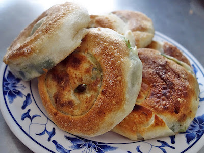

周家蔥油餅
基隆港曾是基隆發展的樞紐地帶，雖然現在已經沒落，但留下周邊許多家美味早餐。他們的共同特徵都是便宜、份量大，因為從前港口工作辛苦，工人們需要有個地方吃一頓補充體力的早餐。而周家蔥油餅正是道地的港邊早餐，它的美味和老闆的壞脾氣一樣遠近馳名。
「滋……」微焦的蔥油餅在鐵板上散發出誘人香味，實在是視覺和聽覺的雙重饗宴！這裡的蔥油餅經過煎炸、烤箱高溫逼油，而內餡是宜蘭來的三星蔥，鮮嫩多汁，使得蔥油餅口感外酥內嫩，極富口感。香噴噴的蔥油餅的絕妙搭配，就是餛飩湯了！薄皮鮮肉、顆顆飽滿，盛了滿滿一整碗，清淡爽口的湯頭，配蔥油餅剛剛好。
